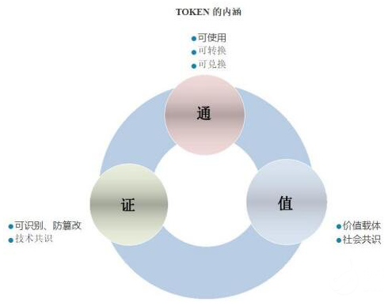

什么是通证？有哪些实际应用和类型？
2019-10-26 09:31狭义角度来说，通证是可流通的凭证，是数字资产的表示，具有使用权、收益权等多种属性。中本聪对比特币的定义：“What we needed is an electronic payment system based on cryptographic proof instead of trust，allowing any two willing parties to transact directly with each other without the need for a trusted third party.”（我们需要的是一个基于密码证明而不是信任的电子支付系统，允许任何两个有意愿的一方直接进行交易，而不需要一个可信的第三方）
从通证的本质内涵来讲，通证具有“通”、“证”、“值”三种内涵，具体来说：
通：具有可使用、可转换、可兑换这三种属性
证：具有可识别、防篡改、技术共识这三种属性
值：具有社会共识、价值载体这两种属性
从通证的价值属性来说，通证具有价格、收益、权利三个维度的属性。这三种属性既相对独立相互影响，又相互依赖密不可分。一种通证可能具备一个或者多个价值的属性，几种属性之间可能相关。不同属性之间的通证兑换模型可能不确定，或者随环境变化而变化而无法形成兑换关系。多维价值尺度实际上是通证发行方的一种表现和传播，而非单纯的经济活动。
通证的分类:
按照属性维度，通证可以分为：价值型、收益型、权利型、标识性。
价值型：作为价值载体，直接对应价值，如储值卡、兑换券等。
收益型：持有人在应用场景中获得权利，如优惠卡、贵宾卡等。
权利型：具有收益权可以持续产生收益的，如债券、股票等。
标识型：本身并不具体价值特征，但是某种有价证券或者客观事实的标识，如房产证、老年证。
实际应用类型：
1）币
容量：超过 1000 个品种 功能：另类投资品种之一，区块链资产领域的“交换媒介”
市场：目前价值最高的是比特币
典型产品：比特币、莱特币
主要指标：参与节点数、流动性
2）平台
容量：约有 20 个品种
功能：建立技术平台，为各种应用开发提供基础技术支撑
市场：相当一部分平台处于开发，机构投资占有一定的份额
典型产品：以太坊、Fabric、小蚁
主要指标：技术指标、开发进度
3）应用
容量：约 300 个品种
功能：涵盖金融、供应链管理、社交、能源、产权保护等各个领域
市场：区块链资产增长最快的品种
典型产品：OMG
主要指标：开发进度、参与节点数
4）实物资产代币化
容量：不超过 10 个品种
功能：挂钩黄金、美元等资产，是实物资产在区块链的映射
市场：由于各国法律界定尚未明确，市场容量较小，但与资产证券化相结合，想象空间大
典型产品：DigixDAO
通证经济体系设计三要素：
1）流通的价值
流通是否创造新的价值，例如：不良资产
流通创造价值的来源：需求发现还是成本降低
2）为谁创造价值
资产发行方的利益
消费者的利益
中介的利益
3）流通的边界
边界内流通与跨边界流通的差异
跨边界流通与边界延伸的差异
跨边界流通与现行资产确权制度的关系
通证的优势及“攻防步骤”:
1）超级信任
2）超级流动性
3）低交易成本
4）可编程、可自动化交易
5）低发行门槛
6）非标商品定价
7）复杂价值透明表达
8）隐私信息保护
数字货币发展现状:
加密数字货币行业可以分为三个阶段，第一阶段是以比特币为代表的区块链 1.0阶段，主要解决比特币特性的不足，如匿名、隐私、交易速度等；第二阶段是以太坊为代表的区块链 2.0，诞生了无数解决智能合约、计算、存储、资产交易等解决方案；第三阶段是基于区块链和 Token 的各个行业的应用。